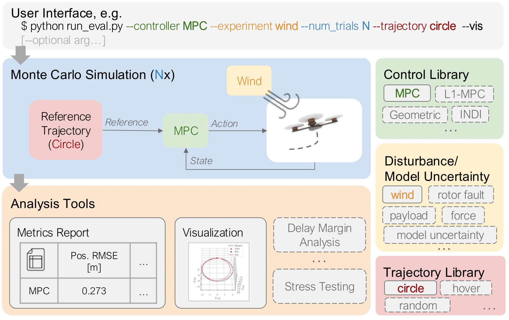

A Simulation Evaluation Suite for Robust Adaptive Quadcopter Control
Dingqi Zhang, Ran Tao, Sheng Cheng, Naira Hovakimyan, Mark W. Mueller
American Control Conference (ACC), 2026
Robust adaptive control methods are essential for maintaining quadcopter performance under external disturbances and model uncertainties. However, fragmented evaluations across tasks, simulators, and implementations hinder systematic comparison of these methods. This paper introduces an easy-to-deploy, modular simulation testbed for quadcopter control, built on RotorPy, that enables evaluation under a wide range of disturbances such as wind, payload shifts, rotor faults, and control latency. The framework includes a library of representative adaptive and non-adaptive controllers and provides task-relevant metrics to assess tracking accuracy and robustness. The unified modular environment enables reproducible evaluation across control methods and eliminates redundant reimplementation of components such as disturbance models, trajectory generators, and analysis tools. We illustrate the testbed's versatility through examples spanning multiple disturbance scenarios and trajectory types, including automated stress testing, to demonstrate its utility for systematic analysis.
@misc{zhang2025simulationevaluationsuite,
title={A Simulation Evaluation Suite for Robust
Adaptive Quadcopter Control},
author={Dingqi Zhang and Ran Tao and Sheng Cheng
and Naira Hovakimyan and Mark W. Mueller},
year={2025},
eprint={2510.03471},
archivePrefix={arXiv},
primaryClass={cs.RO},
url={https://arxiv.org/abs/2510.03471},
}